Unidad Temática II. Instrucciones de Administración de Bases de Datos Relacionales
Unidad de competencia
Emplea instrucciones de administración de bases de datos a partir de un SMBDR.
Los siguientes temas se tratan en esta unidad
- 2.1 Consultas simples y multitabla
- 2.2 Administración de la seguridad e integridad de la información en un Sistema Manejador de Bases de Datos Relacionales (SMBDR)
- 2.3 Control de concurrencia y técnicas de bloqueo
- 2.4 Implementación de transacciones, procedimientos almacenados, disparadores, funciones y cursores
- 2.5 Respaldos y recuperación en las Bases de Datos Relacionales
2.1 Consultas simples y multitabla
La analogía de la ventanilla de control escolar
Hacer una consulta es como pedir algo en la ventanilla de control escolar. No te entregan todo el archivo, solo la hoja que pediste. Si lo que buscas está en una sola lista es una consulta simple. Si hay que juntar dos o más listas, por ejemplo alumnos y calificaciones usando la boleta, es una consulta multitabla.
Tabla 1 — Partes de una consulta
| Cláusula | ¿Para qué sirve? |
|---|---|
SELECT | Elige las columnas que quieres ver. |
FROM | Dice de qué tabla o tablas salen los datos. |
WHERE | Deja solo las filas que cumplen una condición. |
GROUP BY | Junta las filas en grupos para resumirlas. |
HAVING | Deja solo los grupos que cumplen una condición. |
ORDER BY | Ordena el resultado. |
Para unir tablas se usa JOIN, que se apoya en las llaves foráneas del tema 1.2. Cada tipo de unión deja pasar filas distintas
Tabla 2 — Tipos de JOIN
| Tipo | ¿Qué trae? |
|---|---|
INNER JOIN | Solo las filas que tienen pareja en las dos tablas. |
LEFT JOIN | Todas las filas de la tabla izquierda. Si no hay pareja, los datos de la derecha salen como NULL. |
RIGHT JOIN | Todas las filas de la tabla derecha, tengan pareja o no. |
FULL JOIN | Todas las filas de las dos tablas. MySQL lo arma uniendo un LEFT y un RIGHT. |
Figura 1. Diagrama propio. Los cuatro tipos de JOIN dibujados como círculos que se enciman. La parte pintada es lo que trae cada uno.
Tabla 3 — Otras herramientas para consultar
| Herramienta | ¿Qué hace? |
|---|---|
Funciones de agregación (COUNT, SUM, AVG, MIN, MAX) | Resumen muchas filas en un solo número, como en el tema 1.5. |
| Subconsulta | Es una consulta dentro de otra. Sirve cuando primero hay que calcular algo, como un promedio. |
UNION, INTERSECT, EXCEPT | Juntan o comparan los resultados de dos consultas. |
Práctica. Clínica veterinaria · Parte 3. Consultas multitabla
Con los datos que se cargaron en el tema 1.5 ahora se cruzan varias tablas a la vez. Las dos vistas que se crean aquí se vuelven a usar en los temas 2.2 y 2.5.
a) Objetivo. Usar la instrucción SELECT del DML para hacer consultas multitabla y guardarlas como vistas.
b) Introducción. Se crean vistas con CREATE VIEW uniendo tablas con WHERE y con INNER JOIN. Después se prueban LEFT JOIN, GROUP BY con HAVING y una subconsulta.
c) Requerimientos. MySQL 8.0 y MySQL Workbench, con la base veterinaria como quedó en el tema anterior.
PASO 1 · WHERE Vista multitabla con WHERE
La vista v_consultas_detalle junta consulta, mascota, dueño y veterinario. Cada condición del WHERE iguala una llave foránea con su llave primaria, y así cada consulta muestra nombres en lugar de números.
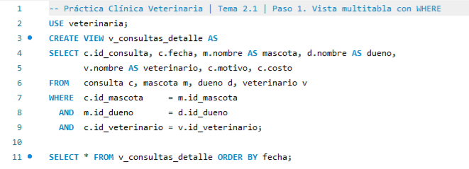
Resultado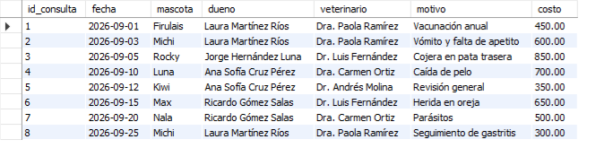
Figura 2. Captura propia en MySQL Workbench. Las ocho consultas con el nombre de la mascota, del dueño y del veterinario.
PASO 2 · INNER JOIN Vista multitabla con INNER JOIN
Es la misma idea escrita con INNER JOIN ... ON. Se lee más fácil porque cada unión queda junto a su condición. La vista v_recetas dice qué medicamento se dio a cada mascota.
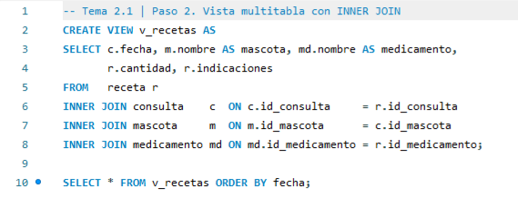
Resultado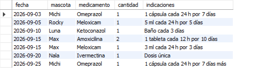
Figura 3. Captura propia en MySQL Workbench. Las siete recetas con su mascota y su medicamento.
PASO 3 · LEFT JOIN Ver también las consultas sin receta
Con INNER JOIN las consultas sin receta no aparecen. LEFT JOIN conserva todas las consultas y llena con NULL lo que no tiene pareja.
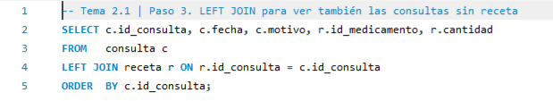
Resultado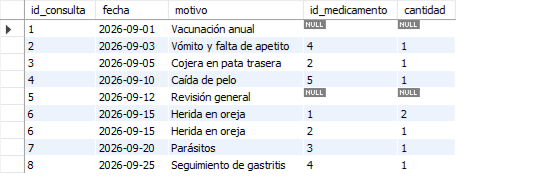
Figura 4. Captura propia en MySQL Workbench. Las consultas 1 y 5 todavía no tienen receta.
PASO 4 · GROUP BY Agrupar datos de dos tablas
Se agrupan las consultas por veterinario y se suman sus costos. HAVING deja solo a quienes juntaron 1000 pesos o más. El Dr. Andrés Molina no aparece porque solo cobró 350.
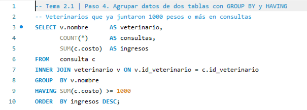
ResultadoFigura 5. Captura propia en MySQL Workbench. Ingresos por veterinario.
PASO 5 · SUBCONSULTA Una consulta dentro de otra
La subconsulta calcula primero el costo promedio de todas las consultas, que es 550. La consulta de afuera muestra solo las que cuestan más.
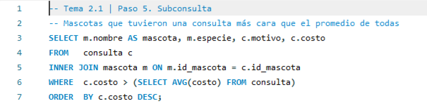
ResultadoFigura 6. Captura propia en MySQL Workbench. Consultas más caras que el promedio.
Observaciones. Las vistas v_consultas_detalle y v_recetas quedan guardadas en la base. La primera se le da a la recepción en el tema 2.2 y la segunda sirve para comprobar la recuperación del tema 2.5.
2.2 Administración de la seguridad e integridad de la información en un Sistema Manejador de Bases de Datos Relacionales (SMBDR)
La analogía del guardia y el reglamento
La seguridad es el guardia de la entrada. Decide quién entra al SMBDR y qué puede hacer ya adentro. La integridad es el reglamento pegado en la pared. Aunque ya estés adentro, no te deja guardar datos que no cuadran.
Tabla 4 — Instrucciones de seguridad (DCL)
| Instrucción | ¿Qué hace? |
|---|---|
CREATE USER | Crea una cuenta con su contraseña. |
GRANT | Da permisos sobre una base, una tabla o una vista. |
REVOKE | Quita permisos que ya se habían dado. |
DROP USER | Borra la cuenta. |
Lo recomendable es dar a cada usuario solo los permisos que necesita para su trabajo y nada más. A esto se le llama mínimo privilegio
Tabla 5 — Reglas de integridad
| Regla | ¿Qué asegura? |
|---|---|
PRIMARY KEY | Que cada fila sea única. |
FOREIGN KEY | Que el valor exista en la tabla relacionada. |
NOT NULL | Que el campo no se quede vacío. |
UNIQUE | Que no haya valores repetidos en la columna. |
CHECK | Que el valor cumpla una condición. |
DEFAULT | Que haya un valor cuando no se manda ninguno. |
Práctica. Clínica veterinaria · Parte 4. Seguridad e integridad
La clínica contrata a una persona para la recepción. Debe poder registrar dueños y mascotas y ver la agenda, pero no puede borrar nada ni tocar las demás tablas.
a) Objetivo. Usar el Lenguaje de Control de Datos (DCL) para administrar la seguridad e integridad de la base de datos.
b) Introducción. Se crea un usuario, se le dan permisos con GRANT, se prueba entrando con él, se le quita un permiso con REVOKE y se comprueban las reglas de integridad.
c) Requerimientos. MySQL 8.0 y MySQL Workbench, con la base veterinaria como quedó en el tema anterior.
PASO 1 · CREATE USER Crear el usuario de la recepción
'recepcion'@'localhost' quiere decir que solo puede entrar desde esta misma computadora. account_locked en N indica que la cuenta está activa.
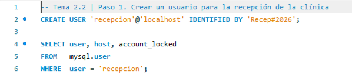
ResultadoFigura 7. Captura propia en MySQL Workbench. La cuenta recepcion ya existe.
PASO 2 · GRANT Dar permisos
Se dan permisos de consultar y registrar sobre dueno y mascota, y solo de consultar sobre la vista v_consultas_detalle del tema 2.1. La lista sale del diccionario de datos.
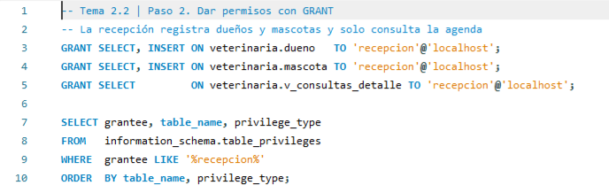
ResultadoFigura 8. Captura propia en MySQL Workbench. Permisos que tiene la recepción.
PASO 3 · CONEXIÓN Entrar como recepcion
En Workbench se crea una conexión nueva con el usuario recepcion y la base veterinaria. Al abrirla, el panel de esquemas solo muestra veterinaria, porque no tiene permiso sobre nada más.
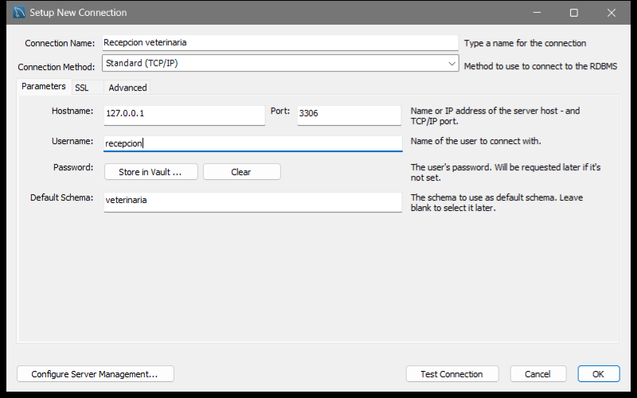
Figura 9. Captura propia en MySQL Workbench. Conexión para el usuario de la recepción.
PASO 4 · PRUEBA Probar los permisos
Conectado como recepcion, la consulta y el registro de Toby funcionan. Al intentar borrarlo, MySQL responde con el error 1142 porque ese permiso nunca se dio.
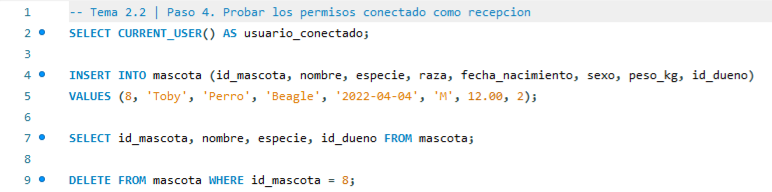
Resultado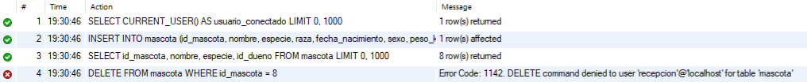
Figura 10. Captura propia en MySQL Workbench. Lo que sí puede hacer la recepción y lo que no.
PASO 5 · REVOKE Quitar un permiso
Desde root se le quita a la recepción el permiso de registrar mascotas. En la lista ya no aparece INSERT sobre mascota.
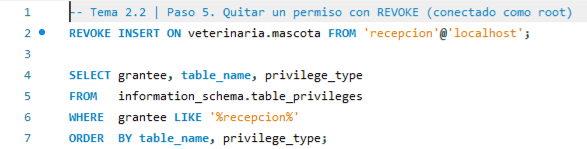
Resultado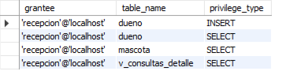
Figura 11. Captura propia en MySQL Workbench. Permisos después del REVOKE.
PASO 6 · PRUEBA Comprobar el REVOKE
De vuelta como recepcion, consultar sigue funcionando, pero registrar a Pelusa ya da el error 1142.
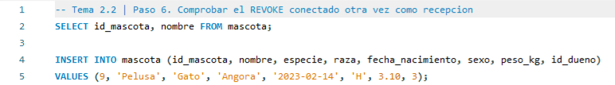
Resultado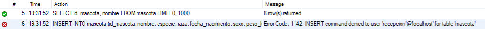
Figura 12. Captura propia en MySQL Workbench. El permiso quitado ya no funciona.
PASO 7 · INTEGRIDAD Las reglas también cuidan los datos
Aunque root tiene todos los permisos, las reglas de la tabla lo detienen. CHECK rechaza el sueldo negativo con el error 3819 y UNIQUE rechaza la cédula repetida con el error 1062.
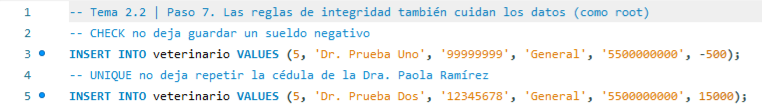
Resultado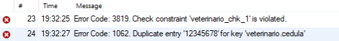
Figura 13. Captura propia en MySQL Workbench. Las restricciones del tema 1.4 en acción.
Observaciones. La base tiene ahora el usuario recepcion con permisos limitados y una mascota más, Toby.
2.3 Control de concurrencia y técnicas de bloqueo
La analogía de la llave del baño
Piensa en un solo baño con una sola llave. Quien agarra la llave entra y los demás esperan. El SMBDR hace lo mismo con los datos. Antes de cambiar un dato le pone un candado y nadie más lo toca hasta que lo suelta.
Tabla 6 — Problemas que evita el control de concurrencia
| Problema | ¿Qué pasaría? |
|---|---|
| Cambio perdido | Dos personas guardan encima de la otra y un cambio desaparece. |
| Lectura sucia | Alguien lee un dato que otro todavía no confirma y que luego se deshace. |
| Lectura no repetible | Lees el mismo dato dos veces y sale distinto porque alguien lo cambió en medio. |
| Lectura fantasma | Repites una consulta y aparecen filas nuevas que otro agregó. |
Tabla 7 — Tipos de candado
| Candado | ¿Para qué? | ¿Con quién se lleva? |
|---|---|---|
| Compartido | Para leer | Con otros compartidos. Varios pueden leer a la vez. |
| Exclusivo | Para escribir | Con nadie. Los demás esperan. |
Casi todos los SMBDR guardan los candados hasta el COMMIT o el ROLLBACK. A esto se le llama bloqueo en dos fases estricto. Además se puede elegir qué tan estricto es el aislamiento entre operaciones
Tabla 8 — Niveles de aislamiento
| Nivel | Lectura sucia | Lectura no repetible | Lectura fantasma |
|---|---|---|---|
READ UNCOMMITTED | Sí | Sí | Sí |
READ COMMITTED | No | Sí | Sí |
REPEATABLE READ | No | No | Sí |
SERIALIZABLE | No | No | No |
MySQL usa REPEATABLE READ si no se le indica otro. Cuando dos operaciones se esperan una a la otra se forma un abrazo mortal. El SMBDR lo detecta, cancela una con ROLLBACK y deja seguir a la otra
Figura 14. Diagrama propio. T1 espera algo que tiene T2 y T2 espera algo que tiene T1. Se forma un círculo y eso es el abrazo mortal.
Práctica. Clínica veterinaria · Parte 5. Concurrencia y bloqueos
Dos personas de la clínica venden Amoxicilina al mismo tiempo. Para verlo se abren dos pestañas de conexión en Workbench. Cada pestaña es una sesión distinta, como si fueran dos computadoras.
a) Objetivo. Observar cómo el SMBDR controla el acceso al mismo dato desde dos sesiones.
b) Introducción. Se usan START TRANSACTION, COMMIT y ROLLBACK en dos sesiones y se consulta sys.innodb_lock_waits para ver quién espera a quién.
c) Requerimientos. MySQL 8.0 y dos pestañas de conexión como root en MySQL Workbench.
PASO 1 · SESIÓN 1 Apartar la Amoxicilina
La sesión 1 descuenta 5 Amoxicilinas dentro de una transacción y todavía no confirma. Ella ya ve 35, pero el cambio aún no es oficial.
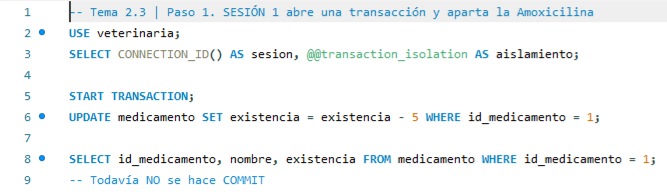
Resultado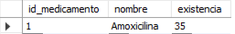
Figura 15. Captura propia en MySQL Workbench. La sesión 1 tiene el candado exclusivo de la fila.
PASO 2 · SESIÓN 2 Querer el mismo dato
La sesión 2 todavía ve 40, así que no hay lectura sucia. Su UPDATE se queda en Running porque la fila tiene el candado de la sesión 1.
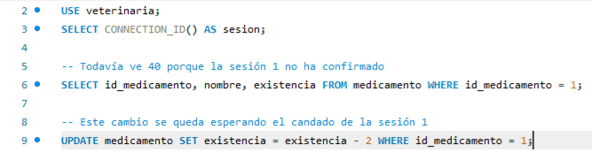
Resultado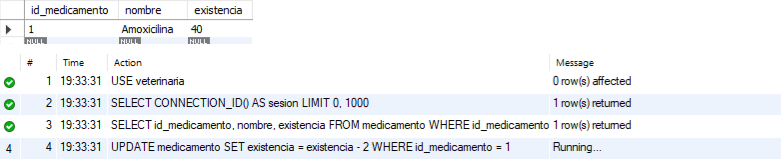
Figura 16. Captura propia en MySQL Workbench. La sesión 2 espera su turno.
PASO 3 · ESPERA Ver quién espera a quién
Desde la sesión 1 se ve que la sesión 30, que es la 2, espera a la 26, que es la 1. Después COMMIT confirma el cambio y suelta el candado.
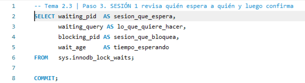
ResultadoFigura 17. Captura propia en MySQL Workbench. El SMBDR sabe quién bloquea a quién.
PASO 4 · RESULTADO Ningún cambio se perdió
La sesión 2 terminó sola después de 22 segundos. El resultado es 33, o sea 40 menos 5 menos 2. Los dos cambios quedaron guardados.
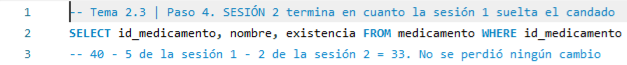
Resultado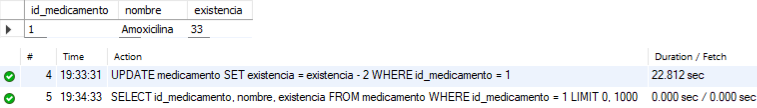
Figura 18. Captura propia en MySQL Workbench. Existencia final de la Amoxicilina.
PASO 5 · ABRAZO MORTAL Dos sesiones que se esperan entre sí
Cada sesión aparta un medicamento y luego pide el de la otra. MySQL detecta el círculo de esperas, cancela la sesión 2 con el error 1213 y deja terminar a la sesión 1. Al final la sesión 1 hace ROLLBACK para no alterar las existencias.
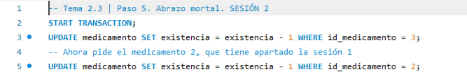
Sesión 2. Resultado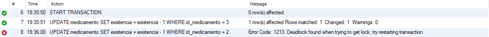
Sesión 1. Instrucción ejecutada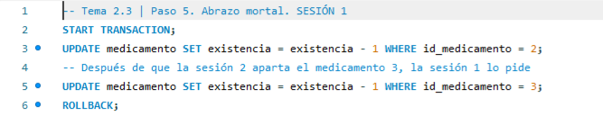
Sesión 1. Resultado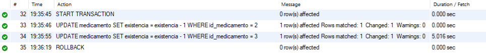
Figura 19. Captura propia en MySQL Workbench. El abrazo mortal de la Figura 14 visto en MySQL.
Observaciones. La Amoxicilina quedó con 33 piezas. Esa cantidad es la que se usa en el tema 2.4.
2.4 Implementación de transacciones, procedimientos almacenados, disparadores, funciones y cursores
La analogía del personal de planta
El SMBDR puede tener personal de planta que vive dentro del servidor. Los procedimientos hacen tareas cuando los llamas, las funciones te regresan un dato, los disparadores trabajan solos cuando pasa algo y los cursores revisan un resultado fila por fila.
Tabla 9 — Objetos que se programan en el servidor
| Objeto | ¿Qué es? | ¿Cómo se usa? |
|---|---|---|
| Transacción | Grupo de operaciones que se hacen todas o ninguna. | START TRANSACTION, COMMIT y ROLLBACK |
| Procedimiento almacenado | Rutina guardada en el servidor. | Se llama con CALL. |
| Función | Rutina que siempre regresa un valor. | Dentro de un SELECT. |
| Disparador (trigger) | Rutina que corre sola ante un INSERT, UPDATE o DELETE. | No se llama, se dispara. |
| Cursor | Recorre fila por fila el resultado de una consulta. | Dentro de un procedimiento. |
Dentro de estas rutinas se puede preparar un plan para los errores, llamado manejador (HANDLER). Si algo falla, el manejador decide qué hacer, por ejemplo deshacer todo con ROLLBACK
Práctica. Clínica veterinaria · Parte 6. Transacciones, procedimientos, disparadores, funciones y cursores
Igual que en el manual, se automatizan tareas de la clínica. Una transacción para recetar, procedimientos para manejar veterinarios, disparadores que llenan una bitácora, una función y un cursor.
a) Objetivo. Usar CREATE PROCEDURE, CREATE TRIGGER, CREATE FUNCTION, los cursores y las transacciones.
b) Introducción. Se programan rutinas que viven en el servidor. DELIMITER $$ cambia el fin de instrucción para que Workbench no corte un procedimiento largo en cada punto y coma de adentro.
c) Requerimientos. MySQL 8.0 y MySQL Workbench, con la base veterinaria como quedó en el tema anterior.
PASO 1 · TRANSACCIÓN Recetar en una sola transacción
El procedimiento sp_recetar guarda la receta y descuenta la existencia juntas. Si cualquiera de los dos pasos falla, el manejador hace ROLLBACK y avisa.
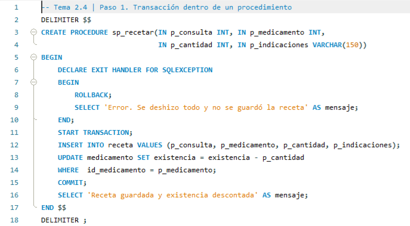
Figura 20. Captura propia en MySQL Workbench. Procedimiento con transacción y manejador de errores.
PASO 2 · CALL Una receta que sí se puede surtir
Firulais recibe una Amoxicilina. Hay existencia, así que se guardan la receta y el descuento.
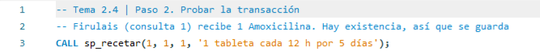
ResultadoFigura 21. Captura propia en MySQL Workbench. La transacción terminó con COMMIT.
PASO 3 · CALL Una receta que no se puede surtir
Kiwi pide 50 Ivermectinas y solo hay 12. El CHECK del tema 1.4 hace fallar el descuento y el manejador deshace también la receta.
Figura 22. Captura propia en MySQL Workbench. La transacción terminó con ROLLBACK.
PASO 4 · COMPROBAR Nada quedó a medias
La Amoxicilina bajó de 33 a 32 y tiene su receta. La Ivermectina sigue en 12 y no quedó ninguna receta incompleta.
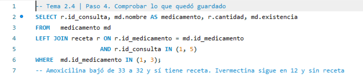
Resultado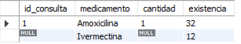
Figura 23. Captura propia en MySQL Workbench. Así quedaron los datos después de las dos llamadas.
PASO 5 · BITÁCORA Tabla bitácora y disparador de altas
Como en el manual, una tabla bitácora guarda quién hizo cada movimiento y cuándo. El disparador tg_veterinario_alta escribe en ella cada vez que se registra un veterinario. NEW es la fila nueva.
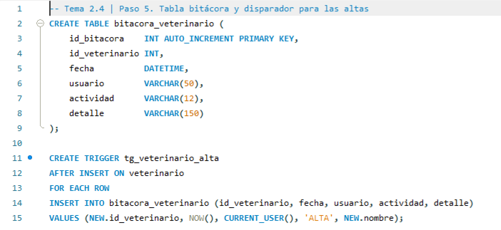
Figura 24. Captura propia en MySQL Workbench. La bitácora y su primer disparador.
PASO 6 · DISPARADORES Disparadores de cambios y bajas
OLD guarda los valores de antes. Así la bitácora registra el sueldo anterior y el nuevo en cada cambio. La lista confirma los tres disparadores.
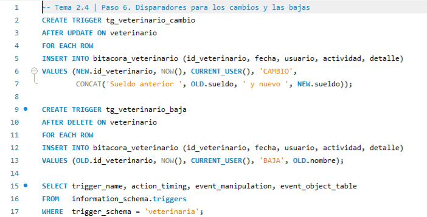
Resultado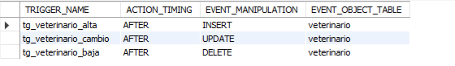
Figura 25. Captura propia en MySQL Workbench. Disparadores de la tabla veterinario.
PASO 7 · PROCEDIMIENTOS Alta, cambio, consulta y baja
Cuatro procedimientos para dar de alta, cambiar el sueldo, consultar por especialidad y dar de baja. Como cada uno tiene una sola instrucción no necesitan BEGIN ni DELIMITER.
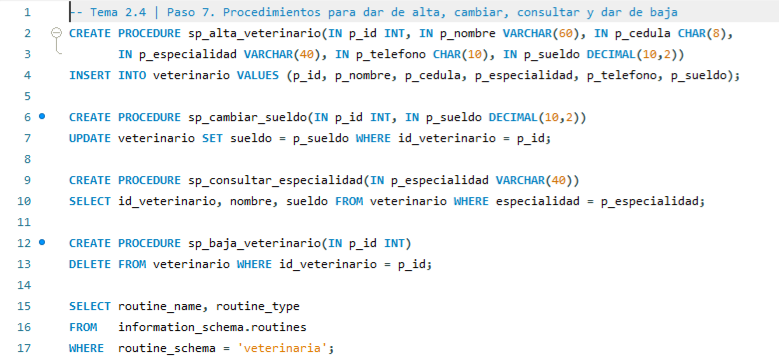
Resultado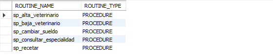
Figura 26. Captura propia en MySQL Workbench. Procedimientos guardados en el servidor.
PASO 8 · CALL Usar los procedimientos
Se registra a la Dra. Sofía Reyes y se le sube el sueldo. También se da de alta y de baja a un veterinario de prueba. La última llamada muestra a los de medicina general.
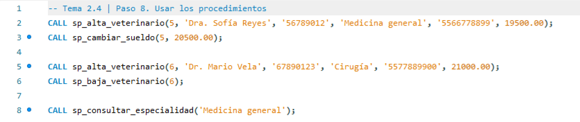
Resultado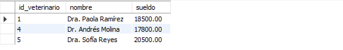
Figura 27. Captura propia en MySQL Workbench. La Dra. Sofía Reyes ya aparece con su nuevo sueldo.
PASO 9 · BITÁCORA La bitácora se llenó sola
Nadie escribió en la bitácora a mano. Los disparadores registraron solos las dos altas, el cambio de sueldo y la baja, con fecha y usuario.
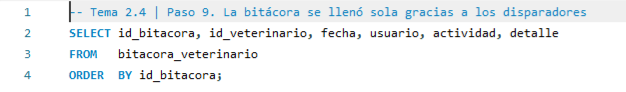
Resultado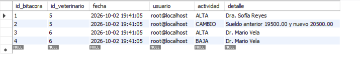
Figura 28. Captura propia en MySQL Workbench. Movimientos guardados por los disparadores.
PASO 10 · FUNCIÓN Cuánto ha gastado cada dueño
fn_total_dueno suma lo que ha pagado cada dueño por las consultas de sus mascotas. Se usa dentro de un SELECT igual que SUM o AVG.
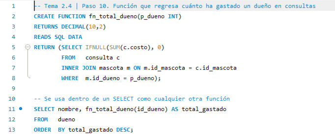
ResultadoFigura 29. Captura propia en MySQL Workbench. Total gastado por dueño.
PASO 11 · CURSOR Recorrer el inventario fila por fila
El cursor lee uno por uno los medicamentos con menos de 20 piezas. FETCH trae la siguiente fila y el manejador NOT FOUND avisa cuando ya no hay más.
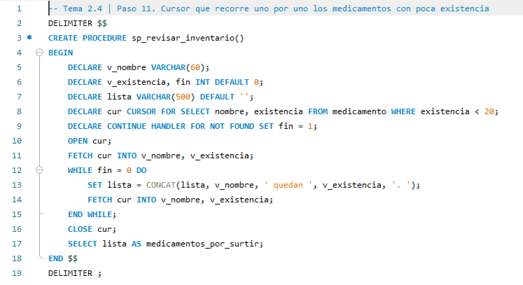
Figura 30. Captura propia en MySQL Workbench. Procedimiento con cursor.
PASO 12 · CALL Usar el cursor
El procedimiento arma una lista con los medicamentos que hay que surtir.
Figura 31. Captura propia en MySQL Workbench. Medicamentos con poca existencia.
Observaciones. La base tiene ahora 5 veterinarios, una bitácora con 4 movimientos, 6 procedimientos, 1 función y 3 disparadores.
2.5 Respaldos y recuperación en las Bases de Datos Relacionales
La analogía de la fotocopia del cuaderno
Un respaldo es una fotocopia de la base de datos guardada aparte, por si un día se pierde el original. La recuperación es volver a armar la base con esa copia y con el registro de lo que pasó después.
Tabla 10 — Tipos de respaldo
| Tipo | ¿Qué guarda? | ¿Qué se necesita para restaurar? |
|---|---|---|
| Completo | Toda la base de datos. | Solo ese respaldo. |
| Diferencial | Lo que cambió desde el último completo. | El completo y el diferencial más nuevo. |
| Incremental | Lo que cambió desde el último respaldo de cualquier tipo. | El completo y todos los incrementales en orden. |
| Del registro | Cada cambio confirmado desde el último respaldo del registro. | Los anteriores y este. Permite volver a un momento exacto. |
Figura 32. Diagrama propio. Un respaldo completo el domingo, uno diferencial cada día del resto de la semana y uno del registro cada hora.
Tabla 11 — Formas de respaldar en MySQL
| Forma | ¿Qué guarda? | ¿Con qué se hace? |
|---|---|---|
| Respaldo de una tabla | Los datos en un archivo de texto. | SELECT ... INTO OUTFILE y LOAD DATA INFILE |
| Respaldo completo | Estructura y datos en un archivo .sql. | mysqldump o Data Export de Workbench, que se ve en el tema 3.3 |
| Registro binario | Cada cambio confirmado. | Se activa con log_bin y deja volver a un momento exacto. |
Práctica. Clínica veterinaria · Parte 7. Respaldo y recuperación
Se respalda la tabla receta, se borra a propósito y se recupera desde el archivo. El respaldo completo con herramienta gráfica se hace en el tema 3.3.
a) Objetivo. Respaldar y recuperar información con instrucciones del SMBDR.
b) Introducción. Se usa SELECT ... INTO OUTFILE para crear el respaldo y LOAD DATA INFILE para recuperarlo.
c) Requerimientos. MySQL 8.0 y MySQL Workbench, con la base veterinaria como quedó en el tema anterior.
PASO 1 · CONFIGURACIÓN Dónde se guardan los respaldos
MySQL solo deja escribir archivos en la carpeta de secure_file_priv, que es Uploads. log_bin en ON quiere decir que el registro binario está activo.
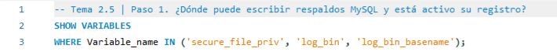
Resultado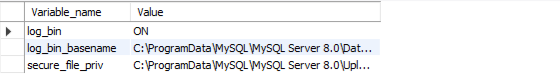
Figura 33. Captura propia en MySQL Workbench. Configuración de respaldos del servidor.
PASO 2 · RESPALDO Guardar la tabla en un archivo
Las 8 recetas se guardan en receta_respaldo.csv, un renglón por receta y sus campos separados por comas.
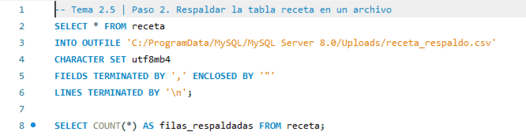
ResultadoFigura 34. Captura propia en MySQL Workbench. Respaldo de la tabla receta.
PASO 3 · ACCIDENTE Se pierden los datos
TRUNCATE vacía la tabla de golpe y no se puede deshacer con ROLLBACK. La tabla queda en cero.
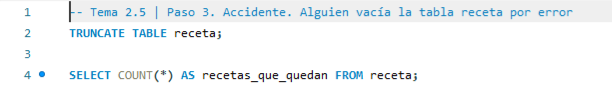
ResultadoFigura 35. Captura propia en MySQL Workbench. La tabla quedó vacía.
PASO 4 · RECUPERACIÓN Recuperar desde el respaldo
LOAD DATA INFILE lee el archivo y vuelve a llenar la tabla. La vista v_recetas del tema 2.1 muestra otra vez las 8 recetas, con sus acentos.
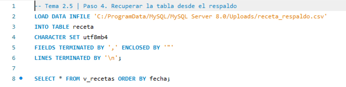
ResultadoFigura 36. Captura propia en MySQL Workbench. La tabla receta recuperada.
Observaciones. La base quedó completa otra vez. Con esto termina la parte de instrucciones. En la Unidad III se hace lo mismo con las herramientas gráficas de Workbench.